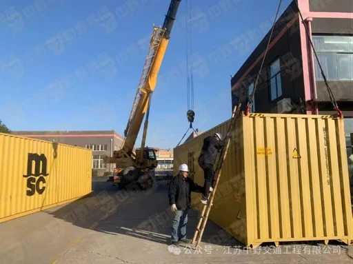

Indonesia
Emergency Bridge Manufacturing
Emergency bridge procurement to support transport recovery after the December 2025 floods.
45 Type 321 bridges, each 30m; 1,350m total bridge length.
ZHONGYE’S CONTRIBUTION
Manufacturing of all 45 bridges completed within one month.

- 45 bridges
- Type 321
- 1,350m
- Total bridge length
- 1 month
- Production completion